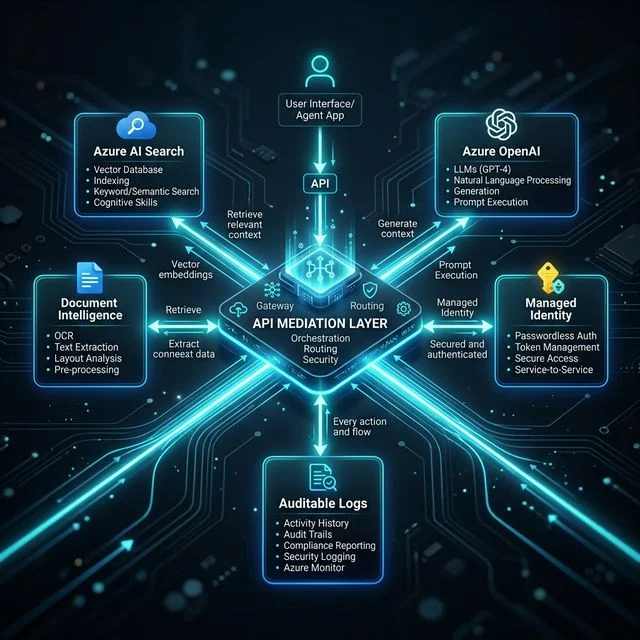

Contents
Every agentic AI pilot I've reviewed shares the same original sin: one shared service principal, standing access to a dozen downstream systems, and a static secret sitting in a key vault nobody rotates. The demo works. The audit doesn't.
Executive Impact Summary
The Standing Privilege Problem
Here's how almost every agentic AI pilot gets built. Someone needs the agent to read from Azure AI Search, call Azure OpenAI, write results to a database, and maybe kick off a downstream workflow. Under deadline pressure, the fastest path is one service principal, one client secret, and a role assignment broad enough that nobody has to come back and ask for more access later — Contributor on the resource group, or worse, the subscription.
It works. The demo ships. And then it goes to security review, where three questions kill the timeline every time:
- "Which agent did this?" Every action in the logs shows the same generic identity —
svc-ai-agent-prod— whether it was Agent A summarizing a contract or Agent B deleting a stale record. There is no per-agent audit trail. - "What's the blast radius if this credential leaks?" The honest answer is: everything that service principal can touch. Not the one API the agent actually needed — every system the team was ever lazy enough to grant it.
- "How do you revoke just this agent?" You can't, without breaking every other agent sharing the same identity. The only lever is "rotate the secret and redeploy everything," which nobody wants to do mid-incident.
None of this is a model problem. GPT-4, Claude, or whatever LLM is doing the reasoning is not the risk. The risk is the plumbing underneath it — the fact that most agentic AI architectures were built by borrowing the identity pattern from a 2015-era backend service, not designed for a fleet of autonomous actors that can each take independent action.
Architect's Corner: A Badge vs. a Master Key
The Legacy: One Master Key
A shared service principal is a master key handed to every contractor on a building site. It opens every door, all day, every day — because cutting a new key for each contractor felt like too much overhead.
- Lose the key, and every door on the site is compromised — not just the one the contractor was supposed to be in.
- The security log just says "master key used." It never says which contractor, or which door.
Zero Standing Privilege: A Badge
A per-agent workload identity is a badge that only opens the specific doors that agent needs, only while it's clocked in for that specific task, and logs the exact person and door every single time.
- Lose one badge, and exactly one contractor's access is revoked. Everyone else keeps working.
- The security log names the person, the door, and the minute. That's what a regulator actually wants to see.
The Architecture: Per-Agent Identity, Not Per-Application
The fix isn't a new product — it's a different default. Instead of one identity per application (or worse, per environment), every agent instance gets its own workload identity, and every call it makes is forced through a mediation layer that enforces scope before anything reaches a backend system.
Per-Agent Identity Through the API Mediation Layer

Every agent request carries its own identity through the mediation layer. The gateway — not the agent — holds the managed identity that talks to backend services, so no agent ever sees a raw connection string or API key. Every hop is logged against the agent that made it.
Three things make this different from a normal API gateway pattern:
- The agent authenticates as itself, not as the application. Entra Agent ID (built on the same federated workload identity model as Entra Workload ID) issues a short-lived, per-instance credential — no long-lived secret to leak, rotate, or forget about.
- The mediation layer decides scope, not the agent's own code. Azure API Management sits in front of every downstream call, validates the agent's token claims, and maps them to the narrowest possible permission — read this index, call this one model deployment, nothing else.
- The mediation layer's own identity is a Managed Identity, not a secret. The gateway itself never stores a client secret either. The chain of trust holds all the way down.
Four Layers That Actually Survive Audit
1. Per-Agent Workload Identity
Retire the shared app registration. Every agent — even every instance of the same agent — gets its own federated identity. There is no secret in a config file for an attacker to find, because there is no secret at all.
2. Just-In-Time Scoped Access
Standing RBAC roles get replaced with JIT permissions through Privileged Identity Management. An agent is eligible for a role, not permanently assigned it — the elevation exists only for the task's duration.
3. Mediation as the Enforcement Point
No agent gets a direct connection string to a database or a raw API key to a model deployment. Every downstream call is forced through the API Mediation Layer, where policy — not agent code — decides what's allowed.
4. Immutable, Per-Agent Audit Trail
Every action is logged against the actual agent identity that took it, not the mediation layer's identity or a shared service account. That log is what turns "we think it was fine" into a defensible answer during an audit.
The Zero Standing Privilege Rollout Sequence
This isn't a rip-and-replace project. It's a sequence you can run against one agent at a time without stopping the pilot.
What This Means for Your Next Audit
Regulators evaluating AI systems — whether under an internal model-risk framework, HIPAA, or the EU AI Act's obligations for high-risk systems — keep asking a version of the same question: can you demonstrate control over what this system was allowed to do, and prove what it actually did? A shared service principal cannot answer that question. It was never designed to.
Zero standing privilege isn't a compliance checkbox bolted on after the fact. It's the architecture that makes the answer to "prove it" a query against a log instead of a best-effort reconstruction. That's the difference between an agentic AI program that scales past the pilot and one that stays stuck in review indefinitely.
Ready to operationalize your Azure journey?
If your agentic AI roadmap is stuck in security review because of a shared service principal, this is the exact architecture pattern to bring to the table.